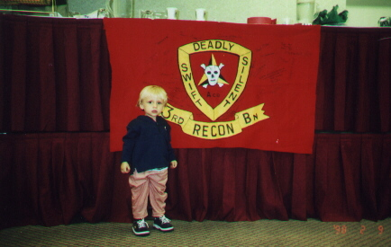

Reunion 2000 page 2
From an earlier version of the association's website, saved 19 May 2004.
Page Two

(photograph not available) (missing from the original site) L-R Roger See, Tom Boland, George Neville, Ray Raymond, Don Schwinn,Calvin Bockbrader
Photo's submitted by Charlie Slay. Charlie was instrumental in the planning and funding process for the Louisiana Vietnam Veterans Memorial. It is in tribute to the 881 Louisiana Men who sacrificed all. The Memorial was dedicated on 11 November 1984 and is located next to a main entrance to the Superdome.
 L-R George Neville, Charlie Slay, and Bill Buhl
L-R George Neville, Charlie Slay, and Bill Buhl
 Louisiana State Vietnam Memorial
Louisiana State Vietnam Memorial

Photo's submitted by Don Schwinn. These are of 1st Platoon Alpha 1967. This reunion was the first time these men had been together as a group since Viet-Nam
 Back Row - Harry Presley, Clarence Powell, Don Schwinn
Back Row - Harry Presley, Clarence Powell, Don Schwinn
Front Row- Jerry Teal, Jack Brenneman, Britt Friery, John Wayne Martin, Dale Sare
(photograph not available) (missing from the original site) Back Row- Roger "Doc" Wines, Britt Friery
Front Row- Harry Presley, Don Schwinn, John W. Martin, Clarence Powell, Dale Sare
(photograph not available) (missing from the original site) L-R - Roger "Doc" Wines, John Wayne Martin
(photograph not available) (missing from the original site) Back Row- Harry Presley, Clarence Powell, John Wayne Martin, Don Schwinn, Dale Sare; Front Row Jean Presley, Helen Powell, Portia Martin, Carole Sare, Roger "Doc Wines
(photograph not available) (missing from the original site) L-R Jack Brenneman, Dale Sare, Don Schwinn, John W. Martin, Clarence Powell, Harry Presley
(photograph not available) (missing from the original site) Dale & Carole Sare, John & Portia Martin, Clarence & Helen Powell, Harry & Jean Presley
(photograph not available) (missing from the original site) L-R Roger "Doc" Wines, Clarence Powell, Helen Powell, Jean Presley, Harry Presley, Portia Martin, John W. Martin
(photograph not available) (missing from the original site) R-L Jerry Teal, Charles Pilkinton, Britt Friery, Carole Sare, Dale Sare